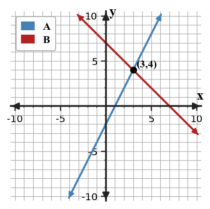

A source-grounded study guide for vocabulary, rules and relationships, section targets, representations, common misconceptions, and reasoning across DOK levels.
Unit at a Glance
What ties Unit 3 together?
Students will solve, represent, interpret, and justify systems and constraints using graphs, algebraic methods, solution types, and contextual meaning.
1Solve systemsFind values satisfying two equations.
→
2Choose methodsGraph, eliminate, or substitute efficiently.
→
3Model constraintsTranslate situations into equations or inequalities.
→
4Interpret overlapUse feasible regions and contextual meaning.
Unit Vocabulary & Representations
Words and representations worth knowing cold
These source-supported terms and representation types organize the work across the unit.
3.1 Graphing and Elimination
Graphs of two linear equationsTables of paired valuesStandard form equationsIntersection pointsSolution-type statements
3.2 Solving Systems by Substitution
Slope-intercept form equationsEquations solved for one variableSubstitution workOrdered-pair solutionsContextual solution statements
3.3 Writing and Solving Systems from Situations
Verbal situationsVariable definitionsSystems of equationsGraphs or tables for checkingContextual conclusions
3.4 Graphing Linear Inequalities
Linear inequalitiesSolid and dashed boundary linesShaded half-planesTest pointsSolution-region statements
3.5 Linear Systems of Inequalities
Systems of inequalitiesMultiple boundary linesOverlapping shaded regionsFeasible pointsConstraint-based contexts
Rules, Forms & Relationships
The structures Unit 3 expects you to use
Use these relationships only in the situations where their structure applies. The section review below shows how they connect to representations and contexts.
System solution
$(x,y)$
A solution must satisfy both equations; graphically it is an intersection point.
Elimination idea
$\begin{aligned}A&=B\C&=D\end{aligned}$
Add or subtract equivalent equations strategically so one variable cancels.
Substitution idea
$y=\text{expression}$
Replace one variable with an equivalent expression from the other equation.
Students will solve systems graphically and by elimination while interpreting the meaning of different solution types.
I can…
I can construct graphical representations of systems and connect intersection points to solutions.
I can use elimination to solve systems and interpret the solution type.
I can determine whether a system has one solution, no solution, or infinitely many solutions from algebraic and graphical evidence.
Summary
Today you connected graphical and algebraic ways to solve systems. A system solution must satisfy both equations at the same time.
On a graph, one solution appears as one intersection point; no solution appears as parallel lines; infinitely many solutions appear as the same line.
A common error is stopping after finding only one coordinate during elimination.
Strong understanding means you can solve, classify the solution type, and explain what the solution means in a situation.

Two linear equations and their intersection.
Key representations:Graphs of two linear equationsTables of paired valuesStandard form equationsIntersection pointsSolution-type statements
DOK 1
Recognize and interpret graphs of two linear equations and the basic features used in this section.
DOK 2
use elimination to solve systems and interpret the solution type
DOK 3
determine whether a system has one solution, no solution, or infinitely many solutions from algebraic and graphical evidence
DOK 4
Represent two competing plans as a system of equations
Common traps to avoid
Stopping after one coordinate
Why it is tempting: elimination often gives $x$ or $y$ first. What to check instead: substitute back to write a complete ordered pair.
Reading the wrong crossing point
Why it is tempting: nearby gridlines can look close. What to check instead: verify the point in both equations.
Mixing solution types
Why it is tempting: parallel and identical lines both do not have one crossing point. What to check instead: compare slopes and intercepts carefully.
Changing equations during elimination
Why it is tempting: multiplying or adding can feel like changing the problem. What to check instead: only use equivalent equations and keep both constraints.
Students will solve systems using substitution and choose efficient forms for solving.
I can…
I can formulate a substitution plan when one equation is already written in an efficient form.
I can apply substitution to solve systems and interpret the ordered-pair solution.
I can assess which algebraic method is more efficient for a given system.
Summary
Today you used substitution to solve systems when one variable was already isolated or easy to isolate.
The key move is replacing a variable with an equivalent expression, then solving the resulting one-variable equation.
A common error is substituting without parentheses or forgetting to find the second coordinate.
Strong understanding means you can choose substitution when it is efficient and interpret the ordered pair in context.
Substitution connected to an intersection.
Key representations:Slope-intercept form equationsEquations solved for one variableSubstitution workOrdered-pair solutionsContextual solution statements
DOK 1
Recognize and interpret slope-intercept form equations and the basic features used in this section.
DOK 2
apply substitution to solve systems and interpret the ordered-pair solution
DOK 3
assess which algebraic method is more efficient for a given system
DOK 4
Represent one quantity in terms of another before solving
Common traps to avoid
Substituting the wrong expression
Why it is tempting: both sides of an equation contain symbols. What to check instead: replace the isolated variable with the entire expression it equals.
Dropping parentheses
Why it is tempting: substitution can look like simple replacement. What to check instead: wrap substituted expressions in parentheses first.
Solving for only one variable
Why it is tempting: the one-variable equation feels like the finish line. What to check instead: substitute back to find the other coordinate.
Choosing an inefficient method
Why it is tempting: any method can eventually work. What to check instead: look for an isolated variable before starting.
Students will analyze and interpret systems of linear inequalities.
I can…
I can formulate a system of inequalities that represents multiple constraints.
I can extend graphing strategies to represent overlapping solution regions.
I can apply feasible-region reasoning to interpret possible solutions in context.
Summary
Today you analyzed systems of inequalities by focusing on points that satisfy all constraints.
Each inequality creates a region, and the overlap is the feasible region for the system.
A common error is accepting a point that satisfies only one inequality.
Strong understanding means you can graph the overlap, test candidate points, and interpret feasible choices in context.
Overlapping solution region for inequalities.
Key representations:Systems of inequalitiesMultiple boundary linesOverlapping shaded regionsFeasible pointsConstraint-based contexts
DOK 1
Recognize and interpret systems of inequalities and the basic features used in this section.
DOK 2
extend graphing strategies to represent overlapping solution regions
DOK 3
apply feasible-region reasoning to interpret possible solutions in context
DOK 4
Represent real-world restrictions with more than one inequality
Common traps to avoid
Checking only one inequality
Why it is tempting: one true statement feels like success. What to check instead: test every constraint.
Shading union instead of overlap
Why it is tempting: all shaded areas look important. What to check instead: identify where all regions overlap.
Mixing dashed and solid boundaries
Why it is tempting: multiple lines increase the load. What to check instead: check each symbol separately.
Calling every boundary intersection feasible
Why it is tempting: intersections stand out visually. What to check instead: test the point in all inequalities.
Unit Mastery by DOK
A second way to organize the review
Sections tell you which topic you are reviewing. DOK tells you how deeply you need to use it.
DOK 1 · Recognize
Control notation and basic features
Recognize the key features and notation used in Graphing and Elimination.
Recognize the key features and notation used in Solving Systems by Substitution.
Recognize the key features and notation used in Writing and Solving Systems from Situations.
Recognize the key features and notation used in Graphing Linear Inequalities.
Recognize the key features and notation used in Linear Systems of Inequalities.
DOK 2 · Apply & Represent
Use procedures and representations
use elimination to solve systems and interpret the solution type.
apply substitution to solve systems and interpret the ordered-pair solution.
predict the meaning of a solution before solving from the context and variables.
use test points to interpret which region satisfies an inequality.
extend graphing strategies to represent overlapping solution regions.
DOK 3 · Reason & Critique
Use evidence to defend or revise
determine whether a system has one solution, no solution, or infinitely many solutions from algebraic and graphical evidence.
assess which algebraic method is more efficient for a given system.
design a solution pathway that connects equations, calculations, and a contextual conclusion.
critique a graph of a linear inequality using the boundary, shading, and solution region.
apply feasible-region reasoning to interpret possible solutions in context.
DOK 4 · Design & Synthesize
Build and connect models
Represent two competing plans as a system of equations
Represent one quantity in terms of another before solving
Create a system from ticket, mixture, cost, or comparison situations
Represent limits such as budgets, minimums, and maximums
Represent real-world restrictions with more than one inequality
Before the Summative
Can you do these without notes?
Vocabulary & Concepts
Graphing and Elimination
Solving Systems by Substitution
Writing and Solving Systems from Situations
Graphing Linear Inequalities
Linear Systems of Inequalities
Representations & Procedures
use elimination to solve systems and interpret the solution type.
apply substitution to solve systems and interpret the ordered-pair solution.
predict the meaning of a solution before solving from the context and variables.
use test points to interpret which region satisfies an inequality.
extend graphing strategies to represent overlapping solution regions.
Reasoning & Modeling
determine whether a system has one solution, no solution, or infinitely many solutions from algebraic and graphical evidence.
assess which algebraic method is more efficient for a given system.
design a solution pathway that connects equations, calculations, and a contextual conclusion.
critique a graph of a linear inequality using the boundary, shading, and solution region.
apply feasible-region reasoning to interpret possible solutions in context.
Strong Algebra work connects procedures to structure, checks representations against one another, and explains why the result fits the mathematical situation.